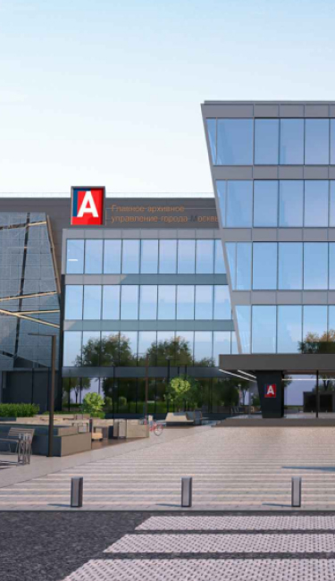

<section class="main js-main">
    <div class="main__bg">
        <picture class="picture">
            <source
                    media="(min-width: 600px)"
                    srcset="../img/main-start-screen-bg.jpg, ../img/main-start-screen-bg@2x.jpg 1.25x"
            />
            
        </picture>
    </div>
    <div class="container main__container">
        <div class="main__wrapper">
            <h1 class="title main__title">Первый роботизированный
                архив в России</h1>
            <p class="text main__subtitle main__subtitle--white">Ультрасовременный архивный комплекс
                ТиНАО, поселение Вороновское, д. Сахарово</p>
        </div>
    </div>
</section>